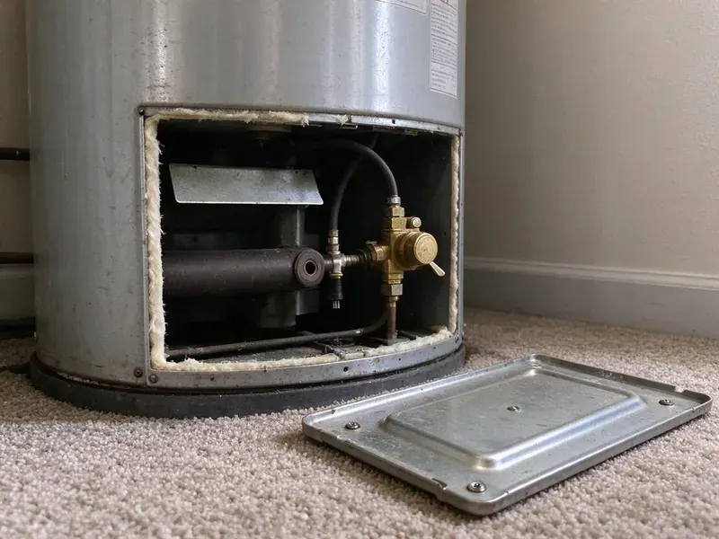

Trenchless Sewer Line Repair in Cincinnati, OH
Trenchless sewer line repair across Cincinnati, OH, from cured-in-place liners to full pipe bursting, with camera video before and after.
- HDPE Pipe Bursting
- Locator Marks the Exact Break
- Driveways Left Intact
- Jointless Pipe Liners Roots Can't Enter

Get a Sewer Camera Inspection in Cincinnati, OH
Book a camera inspection and find out if your line can be lined or needs bursting.
Trenchless Sewer Line Repair in Cincinnati, OH
Our crew at HRL Plumbing carries a push camera with a sonde locator, plus a jetter and the inversion drum used for lining. That kit covers most residential laterals in Cincinnati, OH, from 3-inch cast iron to 6-inch clay. Most homes are 4-inch. We bring it all on one truck.
Work we handle every week:
- Pipe bursting with butt-fused HDPE for full lateral replacement.
- Camera inspection with depth and footage tracking
- Cured-in-place relining for cracked or root-filled sections.

Additional Plumbing Repair Services in Cincinnati, OH
We offer expert plumbing repair services across Cincinnati, OH to fix leaks, restore flow, and keep your system running smoothly.


Customers
Why Choose HRL Plumbing for Trenchless Sewer Line Repair in Cincinnati, OH?
Cutting a driveway costs you twice, first to saw and break the slab and then again to form and pour new concrete over the patch. A liner avoids both bills. For a line under concrete or pavers, trenchless is often the cheaper job after you add up what it takes to put everything back.
- Less Restoration, Small access points mean less concrete cutting and less sod to replace.
- Long Service Life, Liners and HDPE pipe are rated for a 50-year design life when installed right.
- Quick Turnaround, Most residential lining jobs are done in a single day.
Citywide Coverage
Every neighborhood in Cincinnati is in our service area, from older blocks with clay laterals to new subdivisions built on PVC pipe. Camera trucks run across town daily. Tight lots and narrow side gates are normal for us, since the lining gear rolls on a hand cart.
Experienced Team
The same crew that lines pipe also digs, so they know when a dig is the better call. That honesty saves money. Their experience covers lines under slabs and old trees, plus a few that ran beneath swimming pools and additions built long after the sewer went in.
Safety-First Approach
Hot water cure equipment runs near 180 degrees, so the boiler and hoses are fenced off while in use. We ask that kids and pets stay inside until the cure is done. Every hose connection is checked before startup, because a blown fitting at that temperature can scald someone standing nearby within a second or two.
Trusted Certified Cincinnati Plumbing Services Professionals
At HRL Plumbing, we take pride in licensed, certified plumbing services throughout Cincinnati, OH. Credentials matter in this trade. Our plumbers hold recognized industry credentials, and they follow strict safety and quality rules on every repair, installation and maintenance call we run.
Call Us Now PHCC Plumbing Contractor Recognition
PHCC Plumbing Contractor Recognition Better Business Bureau (BBB) Accreditation
Better Business Bureau (BBB) Accreditation Angi Certified Pro
Angi Certified Pro ISO 9001 Quality Management Certification
ISO 9001 Quality Management CertificationTrenchless Sewer Line Repair Services in Cincinnati, OH
Commercial Trenchless Sewer Repair in Cincinnati, OH
Office and retail buildings often have a cast iron building drain under the slab that has rotted along the bottom. Lining it from a cleanout avoids saw-cutting the floor inside an occupied tenant space. Work gets scheduled around tenant hours, nights included. A typical commercial lining job runs one to three days, depending on footage and how many branch connections need to be reinstated with a cutter.

Trenchless vs Traditional Sewer Repair Pricing in Cincinnati, OH
Compare total cost, not just the plumbing line on the invoice. An open-trench replacement can look cheaper on paper, until you add saw-cutting the driveway and pouring new concrete over a trench that may run 50 feet. Most of those extra costs never show up with a liner or a burst. Sod and sprinkler repair add up too.
Sewer Line Video Inspection in Cincinnati
We record the full camera run on every job, from the cleanout out to the city main or the septic tank. You get the file. On the footage you can see what we see, roots at a joint at 22 feet and an offset at 38 feet where the pipe dropped. That map drives the repair plan.
Sewer Camera Inspection for Trenchless Repair in Cincinnati
Every trenchless job starts with a push camera fed in from the cleanout or a pulled toilet. The screen shows the inside of the pipe live, and a sonde in the camera head lets us mark the exact spot on the ground above it. The locator also reads depth, which matters for pit planning. No guessing where to dig.
Cast Iron Sewer Line Lining in Cincinnati, OH
Cast iron rusts from the inside out, and the bottom of the pipe goes first. Plumbers call that channel rot, a groove that eats through the bottom. We descale the pipe with chain knockers or carbide cutters spinning on a flexible shaft, which brings the wall back to bare metal so a liner can bond to it. Under a slab, lining beats breaking up the floor in two rooms.
Trenchless Drain Pipe Lining in Cincinnati, OH
Smaller drain lines inside the house can be lined too, including 2-inch kitchen drains and the 3-inch cast iron stacks found in many older homes. We work through cleanouts and roof vents, so the drywall and tile stay where they are. After curing, a small robotic cutter reopens each branch connection from inside the pipe. That saves opening a finished wall.
Emergency Trenchless Sewer Repair in Cincinnati
Sewage coming up through a floor drain is an emergency, but the first fix is usually a cable or a jetter to get the line flowing again. The permanent trenchless repair follows once the pipe is open and on camera. HRL Plumbing can often schedule the liner within the same week, once the pipe has been cleaned and measured. In the meantime the house drains normally.

Commercial Trenchless Sewer Line Work in Cincinnati, OH
Restaurants feel a sewer failure fast, because grease and a dish machine put heavy load on a 4- or 6-inch building drain all day. We can line at night. A trench through a parking lot means lost spaces and a blocked entrance for a week or more. Liners skip that.
No-Dig Sewer Line Repair Near Me in Cincinnati, OH
Most people who find us this way want one thing, which is the sewer fixed without wrecking the lawn and the driveway they spent years getting to grow. HRL Plumbing does lining, point repairs and bursting with one crew. We match the method to the pipe.
Tree roots and shifting clay often crack older clay or cast iron sewer laterals, leading to slow drains and backups. Hard or rocky ground makes digging slow and expensive, which is where trenchless pays off. Rocky ground can mean bringing in a hydraulic breaker just to open a trench. A liner put in from the cleanout avoids that cost entirely, and a burst only needs two small pits dug by hand or with a mini excavator.
HRL Plumbing at a Glance
- Licensed and insured plumbers serving Cincinnati, OH
- Same-day appointments and 24/7 emergency response
- Clear written estimates, no hidden fees
- 4.9-star rated by 673+ Ohio customers
Cincinnati Map
Cincinnati Information
- Population
- 311,097
- Area codes
- 513/859/937
- Service area
- Cincinnati and communities within 40 miles
- Nearby
- Hamilton, Middletown, Kettering, Dayton
Plenty of older homes in Cincinnati, OH still drain through clay, cast iron or Orangeburg pipe buried under trees and concrete, which is exactly where trenchless repair saves the most digging.
Expert Services
Reach out to HRL Plumbing for reliable plumbing work done by licensed pros in Cincinnati, OH.
Our Specialized Plumbing Services in Cincinnati, OH
At HRL Plumbing, you get every kind of plumbing service from one company across Cincinnati, OH. From leak detection to full system installs, our team works fast and charges fair prices on homes and commercial properties alike. Take a look at our core services below:


What a Trenchless Sewer Repair Looks Like in Cincinnati, OH
Trenchless sewer repair starts with a clear look inside the pipe and ends with video of the finished job.
Request a Quote
Call HRL Plumbing at (740) 449-7505 and tell us what the drains are doing. We set up a camera inspection at your Cincinnati property, usually within a day or two.
Sewer Line Inspection
We run a push camera from the cleanout to the main, record the footage and mark the problem spots on the ground with a locator.
Prepare Access Points
Depending on the method, we dig one or two small pits or work straight from the cleanout. Each pit is roughly three feet square.
Frequently Asked Questions About Trenchless Sewer Line Repair in Cincinnati
Point repairs usually cost $1,500 to $3,500. A full-length liner on a house lateral is often $4,000 to $12,000. Bursting in new pipe tends to run $5,000 to $15,000, depending on the length of the run, how deep the line sits and how easy it is to reach both pits with a mini excavator. We price it after a camera look.
Probably, if the pipe still holds its round shape. Cracked and root-filled lines usually line well, and so does cast iron with surface corrosion, as long as there is enough sound wall left to descale and bond to. A collapsed or badly offset line will need bursting or a spot dig.
A day, for most lining and point repairs. Bursting and longer lines may take one to two days.
Terms depend on the method and the product. Workmanship is covered in writing by us. The liner manufacturer covers the materials on its own, and the exact years, often 10 or more on workmanship and longer on materials, are spelled out on your estimate before you sign.
Yes, and it is often the best way. Lining a cast iron or ABS drain under a slab saves you from jackhammering floors throughout the home.
Workmanship and materials are typically covered for 10 to 20 years, depending on the product and the method. Manufacturers like Perma-Liner and NuFlow back their materials separately. You get both in writing, along with the before and after camera video that shows what was installed and where.
Fifty years is the common design rating for cured-in-place liners and HDPE pipe. Material warranties often run past 25 years. Installation quality is what makes or breaks that number, so we record the prep on camera and keep the footage on file with your warranty.
No, not in any practical sense. Lining takes an inversion drum, a calibrated resin mix and a camera to check the work, and pipe bursting takes a hydraulic puller and an HDPE fusion machine that most plumbers do not even own. Most places also require a licensed plumber on the permit.
What Our Customers Say About Our Plumbing Experts

Brian W.
I smelled gas behind the dryer and called right away. The plumber found a corroded flex connector, replaced it, and pressure tested the whole line before turning the gas back on. He let me watch the gauge hold steady for fifteen minutes.
Gas Line Repair · Dayton, OH
Nathan E.
Our tankless heater kept throwing an error code and shutting off mid shower. The tech flushed the heat exchanger, which was full of scale, and replaced a bad flow sensor. Hot water has been steady for half a year now.
Water Heater Repair · Middletown, OH
Patricia H.
We had a slab leak that two other companies could not find. HRL Plumbing located it in under an hour with a listening device. They rerouted the line through the attic instead of breaking up the floor, so we kept our kitchen tile.
Slab Leak Repair · Dublin, OHDaniel K.
A pipe burst in the garage ceiling at 11 at night. Someone answered on the second ring, and the plumber was in my driveway about fifty minutes later. He shut off the main, cut out the split section, and had water back on before 2 am.
Emergency Plumbing · Kettering, OH
Jessica T.
We were adding a gas range in a kitchen remodel and needed a new line run from the meter. The plumber pulled the permit, ran the pipe through the crawl space, and had it inspected and approved within the week.
Gas Line Repair · Hamilton, OHCarlos V.
Our house still had galvanized pipe, and upstairs the shower was a trickle. The crew repiped everything in PEX over three days and patched every drywall hole before they left. The pressure difference is night and day.
Repiping · Dublin, OH